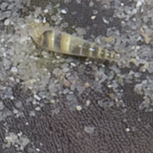
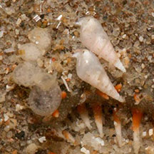

Ulimid
snails
Family
Eulimidae
updated
Aug 2020
Where
seen? These tiny snails are sometimes seen on echinoderms such as sea stars, sea cucumbers and sea
urchins.
Features: 0.1-0.5cm. Long
conical shell, usually white some have brownish patterns. When not attached to a host, they may float on the water
surface, often forming 'rafts' sticking to one another.
|
| What do they eat? These are parasitic
snails that feed on their host. Apparently, they stick their proboscis
through the body wall and suck on the host's body fluids. |
|

Laying eggs too? |

Possibly Eulima adamsii.
Cyrene Reef, Aug 11
On a Cake
sand dollar. |
| Ulimid
snails on Singapore shores |
| Other sightings on Singapore shores |

Changi, Jan 15
Photo shared by Marcus Ng on facebook. |
|
|
Familty
Eulimidae recorded for Singapore
from Tan Siong
Kiat and Henrietta P. M. Woo, 2010 Preliminary Checklist of The
Molluscs of Singapore.
+Other additions (Singapore Biodiversity Record, etc)
| |
+Eulima adamsii
Melanella
aciculata
Melanella martinii
Niso hizensis
Pyramidelloides mirandus
+Vitreobalcis sp. |
|
|
References
- Calvin Jiah Jay Leow. 31 August 2020. Parasitic snail, Eulima adamsii, on sand dollar Arachnoides placenta. Singapore Biodiversity Records 2020: 127 ISSN 2345-7597
- Ying Lynette Shu Min. 29 Sep 2017. Parasitic snails, Vitreobalcis sp., on white sea urchins (Salmacis sphaeroides) at Cyrene Reef. Singapore Biodiversity Records 2017: 123-124.
- Tan Siong
Kiat and Henrietta P. M. Woo, 2010 Preliminary
Checklist of The Molluscs of Singapore (pdf), Raffles
Museum of Biodiversity Research, National University of Singapore.
- Coleman,
Neville. 2003. 2002
Sea Shells: Catalogue of Indo-Pacific Mollusca
Neville Coleman's Underwater Geographic Pty Ltd, Australia.144pp.
|
|
|